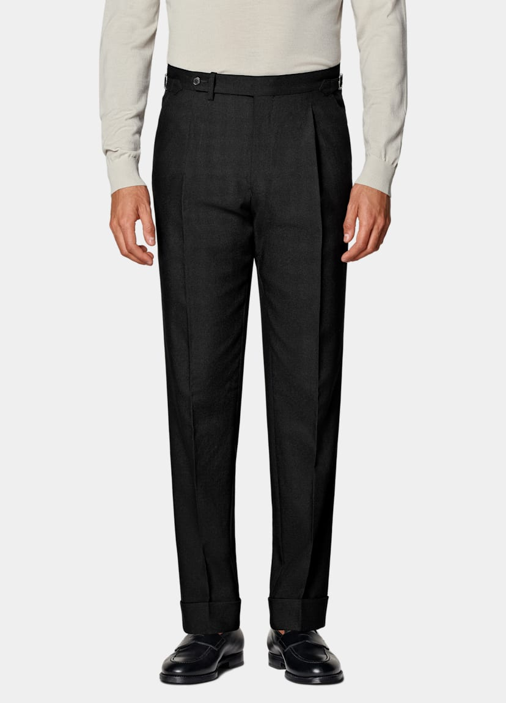
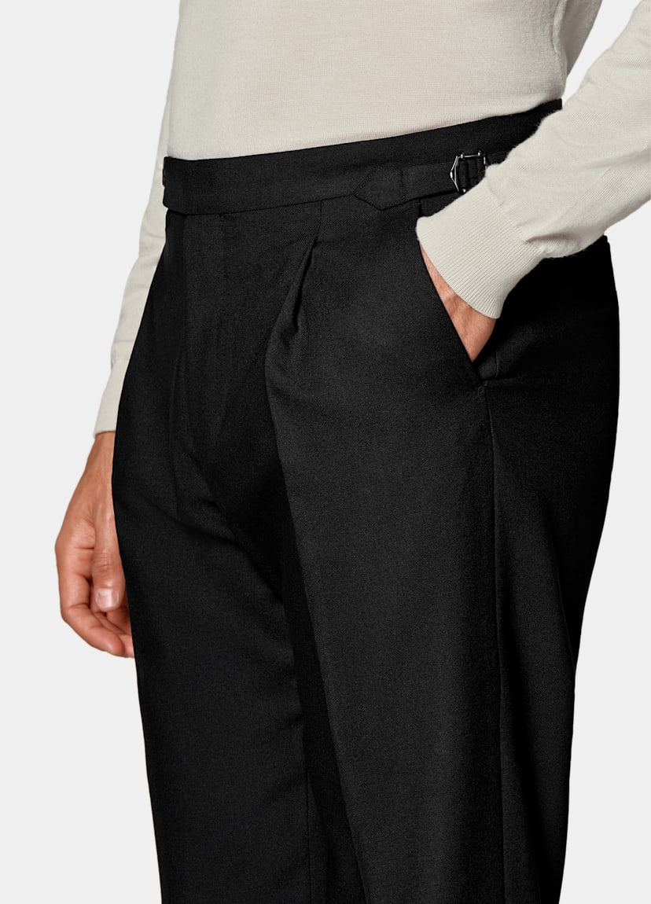
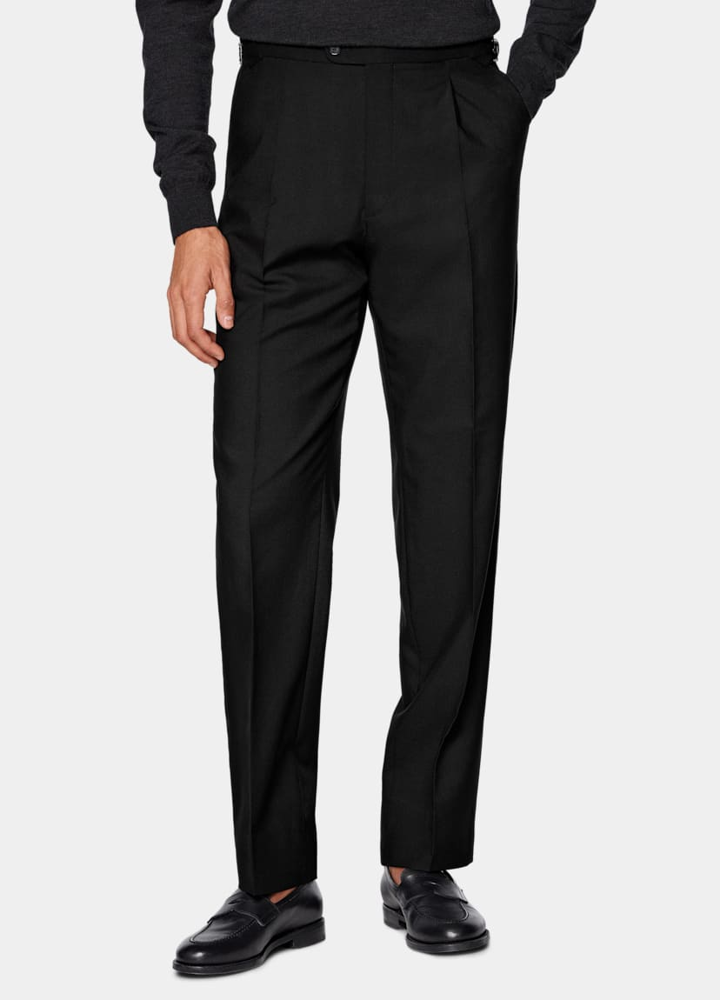
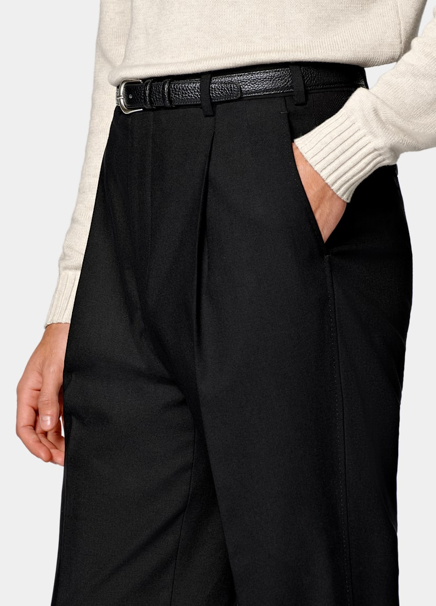

Three details already change with the fit. The customer never gets to choose.
Same cloth. Same price. Only the photo shows the difference.


Slim Tapered
 Straight
Straight
 Wide Tapered
Wide Tapered

Wide StraightFour of the five fits. The fifth, Slim Straight, has no photo in black.